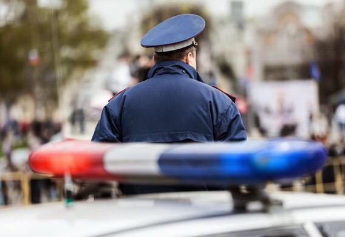
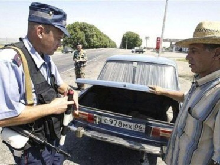
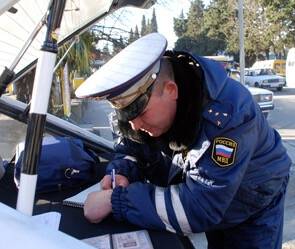

Вас просят открыть капот, багажник или двери автомобиля!

Рекомендации:
- Попросить инспектора предъявить служебное удостоверение, пункт 2.4 ПДД (зафиксировать его данные).
- После того как инспектор предложил вам открыть капот, багажник или двери автомобиля, вежливо попросите его
составить
протокол досмотра (ст. 27.9 КоАП) и ПРИГЛАСИТЬ ДВУХ ПОНЯТЫХ. Причем, совсем не важно, происходит это на
стационарном посту или в глухих степях. В главе 2 ПДД Обязанности
водителя
это не указанно , как обязательное исполнению, лишь просто по устному требованию инспектора
- Ели инспектор подменяет понятие досмотр и осмотр - он лукавит.
Скажите ему, что осмотр бывает технический или визуальный. Если хочет пусть рассматривает машину снаружи, а
салон
через
боковые стекла.
- При этом инспектор не вправе требовать от вас вывернуть карманы или содержимое барсетки. Это относится к
личному
досмотру и регулируется статьей 27.7 КоАП.
Личный досмотр производится лицом одного пола с досматриваемым, в присутствии двух понятых того же пола, под
протокол
личного досмотра.
- Досмотр автомобиля без протокола и без понятых квалифицируются статьей 19.1 КоАП Самоуправство. Если
инспектор
самовольно открывает двери салона или крышку багажника, роется в бардачке, то незамедлительно звонить в 02 и
сообщить о
незаконном обыске в вашей машине.
- Поиск понятых полностью лежит на плечах сотрудника ГАИ.
После 5 минут бездействия инспектора сообщите ему, что если он продолжит вас задерживать, то будет
осуществлен
звонок в
02 с последующим рассказом о нарушении им статьи 12.35 КоАП Не законное ограничение прав на управление ТС
(Штраф
на
должностное лицо: 20 000 рублей)
- Если решили открыть багажник, исключительно по устной просьбе инспектора, то помните, что делаете вы это на
свой
страх
и риск. Были случаи, когда после этого, вдруг находился патрон от пистолета или белый порошок в пакетике,
якобы
случайно
обнаруженный под половичком. План по раскрытию никто не отменял.
- Существует хитрый прием инспектора: после отказа открыть багажник без протокола досмотра, вас просят
предъявить
знак
аварийной остановки (аптечку, огнетушитель), чтобы вы, открыв багажник, их достали. Просим инспектора
указать
номер
статьи ПДД которая обязывает вас предъявить наличие требуемого. Нет такой статьи. Напоминаем, инспектору,
что,
когда вы
выезжали, все эти предметы присутствовали в наличии и лежали в багажнике машины. Хочет убедиться лично пусть
составляет
протокол досмотра и вы откроете багажник. Далее действуем согласно Главы №16 Инспектор хочет проверить
техническое
состояние автомобиля. В 10-ти дневный срок отправляем жалобу на действия ИДПС.

Разъяснение:
Необходимо знать, что статья 27.9 КоАП Досмотр ТС обязывает сотрудников полиции проводить досмотр автомобиля
в вашем присутствии. Инспектор может лишь попросить, чтобы вы отодвинули пакет в багажнике или подняли
накидку на
заднем сидении. Но, ни в коем случае не имеет права это делать собственными руками. Иначе законом эти
действия
квалифицируются как обыск. Право на обыск дает постановление суда или санкция прокурора. Сама по себе
просьба составить
протокол досмотра заставит инспектора задуматься: а с чего бы это так? Будет ли водитель, у которого что-то
противозаконное в багажнике, так смело себя вести? Перспектива поработать с учетом норм закона, а не по
понятиям совсем не обрадует его. Так же потребуется искать
понятых.
Помните, что таковыми не могут быть ни сотрудники полиции, ни пассажиры вашего автомобиля в качестве понятых
могут
выступать лишь люди абсолютно независимые: водители мимо проезжавших автомобилей, их пассажиры, да и просто
пешеходы.
Будьте настойчивы, вежливы и с оттенком металла в голосе. Так как тихое бормотание, бегающие глаза и
дрожащие руки
никак
не говорят об уверенности водителя. Тут действует принцип сообщающихся сосудов, т.е. чем больше уверенности
у
водителя,
тем меньше остается её у инспектора. Инспектор будет обязан указать в протоколе ДОСТАТОЧНО ВЕСКУЮ причину,
по
которой
ему пришлось прибегнуть к процедуре досмотра. А это не так просто.

- Помните, что при сверке номеров кузова и двигателя оттирать от грязи или искать их местоположение, в вашу
обязанность не
входит. Вы можете и вовсе не знать, где расположен номер двигателя. На учет машину ставили коллеги
инспектора ДПС
из
МРЭО. Все вопросы по этому адресу. Выворачивание карманов и содержимого сумочки в процесс досмотра
автомобиля тоже
не
входит.
- Для досмотра необходим веский повод. И если причина надумана или инспектор проводит досмотр без составления
протокола,
то знайте: инспектор переступил черту закона в статье 19.1 КоАП Самоуправство. Составляем жалобу на действия
ИДПС.
- Никакой массовый досмотр (с нарушением процессуальных норм) всех автомобилей подряд даже в период
проведения
антитеррористической операции или плана Перехват, по федеральному, закону в мирное время недопустим. Досмотр
по
общепоисковому принципу закон допускает лишь в случае введения чрезвычайного или военного положения.
- Но, если все же, инспектор проигнорировал ваши требования и начал процедуру досмотра, без документального
оформления,
целесообразно взять на себя роль пассивного наблюдателя и, ни в коем случае, не препятствовать. Даже если
она
проводится
с нарушением процессуальных норм: без понятых и протокола, а местами превращается в откровенный обыск. По
возможности
ведите видео съемку. Будет не лишним привлечь свидетелей (пассажиров вашего или проезжавших мимо
автомобилей,
водителей
или пешеходов) это, если вы надумаете жаловаться на неправомерные действия сотрудника полиции, свидетельские
показания
могут стать основным объективным доказательством. А лучше сразу звонить в 02 (112) и сообщать о
противоправных
действиях
инспектора. Привлекайте к помощи адвоката.
Удачи на дорогах!